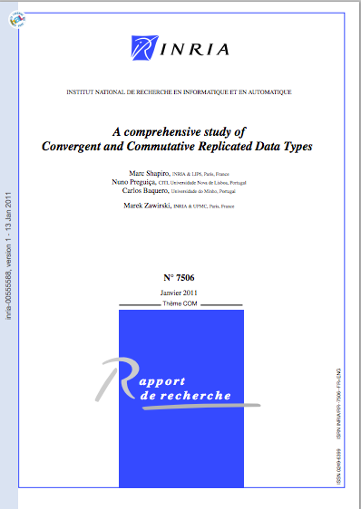
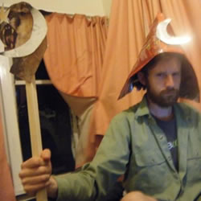

Streaming Commutative Replicated Data
2 May 2013
What is a CRDT?
Convergent or commutative replicated data type
A data type designed so that operations on it between replicas commute and produce the same result independant of the order in which they are applied.
Eventually consistent
Not based on consensus
State-based vs Operation-based
Tolerant to network latency, faults and interuption
Perfect for collaborative, distributed and peer to peer use cases
The Science
A Javascript Implementation
as a stream interface
A Simple Sample
// server
var net = require('net')
var Doc = require('crdt').Doc
var A = new Doc()
net.createServer(function (stream) {
stream
.pipe(A.createStream())
.pipe(stream)
})
// client
var net = require('net')
var Doc = require('crdt').Doc
var A = new Doc()
var stream
(stream = net.connect())
.pipe(A.createStream())
.pipe(stream)
To the browser!
// server
var board = new crdt.Doc()
// shoe is a streams wrapper around sockjs (websockets)
shoe(function (sock) {
var mx;
sock.pipe(mx = new MuxDemux(function (s) {
s.pipe(board.createStream()).pipe(s)
})).pipe(sock)
}).install(server.listen(3000), '/shoe')
// client
var board = new crdt.Doc()
var stream = shoe('/shoe')
var mx = MuxDemux()
stream.pipe(mx)
.pipe(stream)
var ds = board.createStream()
ds.pipe(mx.createStream({type: 'board'}))
.pipe(ds)
Demo!
THANKS!
Mike Brevoort
 @mbrevoort
@mbrevoort